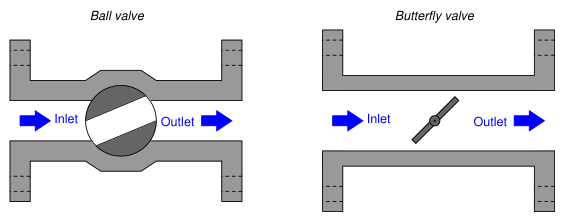
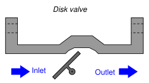
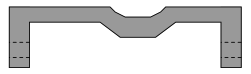
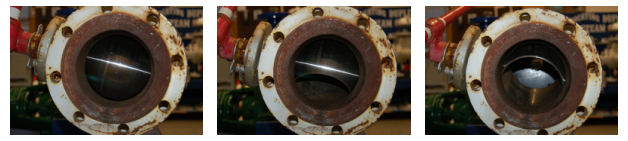
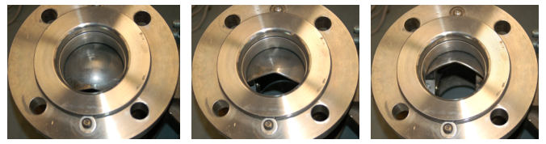
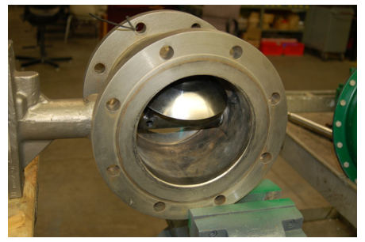

The original, as published: Tony R. Kuphaldt, Lessons In Industrial Instrumentation, Rotary-stem valves. CC BY 4.0, https://creativecommons.org/licenses/by/4.0/. Imported as published, from https://www.ibiblio.org/kuphaldt/socratic/sinst/book/liii.pdf https://www.ibiblio.org/kuphaldt/socratic/sinst/book/liii.pdf
A different strategy for controlling the flow of fluid is to insert a rotary element into the flow path. Instead of sliding a stem into and out of the valve body to actuate a throttling mechanism, rotary valves rely on the rotation of a shaft to actuate the trim. An important advantage of rotary control valves over sliding-stem designs such as the globe valve and diaphragm valve is a virtually obstructionless path for fluid when the valve is wide-open3.



3Of course, gate valves also offer obstructionless flow when wide-open, but their poor throttling characteristics give most rotary valve designs the overall advantage.
In the ball valve design, a spherical ball with a passageway cut through the center rotates to allow fluid more or less access to the passageway. When the passageway is parallel to the direction of fluid motion, the valve is wide open; when the passageway is aligned perpendicular to the direction of fluid motion, the valve is fully shut (closed). The following set of photographs shows a hand-operated ball valve in three different positions, from nearly full closed to nearly full open (left to right):

Simple ball valves with full-sized bores in the rotating ball are generally better suited for on/off service than for throttling (partially-open) service. A better design of ball valve for throttling service is the characterized or segmented ball valve, shown in various stages of opening in the following set of photographs:

The V-shaped notch cut into the opening lip of the ball provides a narrower area for fluid flow at low opening angles, providing more precise flow control than a plain-bore ball valve.
Butterfly valves are quite simple to understand: the “butterfly” element is a disk that rotates perpendicular to the path of fluid flow. When parallel to the axis of flow, the disk presents minimal obstruction; when perpendicular to the axis, the disk completely blocks any flow. Fluid-tight shutoffis difficult to obtain in the classic butterfly design unless the seating area is lined with a soft (elastic) material.
Disk valves (often referred to as eccentric disk valves, or as high-performance butterfly valves) are a variation on the butterfly design intended to improve seat shut-off. The disk’s center is offset from the shaft centerline, causing it to approach the seat with a “cam” action that results in high seating pressure. Thus, tight shut-offof flow is possible even when using metal seats and disks. The following photograph shows the body of a Fisher E-plug control valve, with the disk in a partially-open position:
